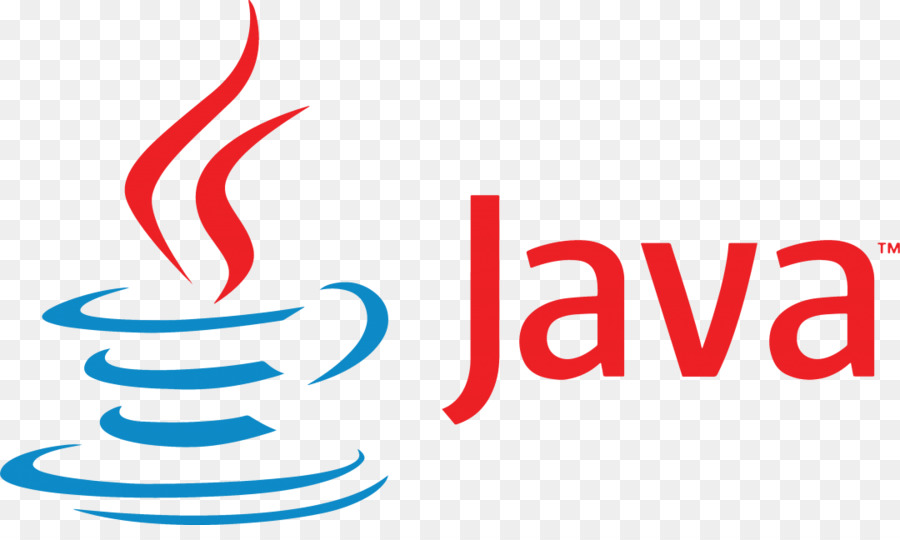

Python é uma linguagem de programação de alto nível que foi criada por Guido van Rossum em dezembro de 1989. A primeira versão oficial, 0.9.0, foi lançada em fevereiro de 1991. Desde então, Python tem se tornado uma das linguagens mais populares no mundo da programação.
Python é conhecido por sua sintaxe clara e legível, o que o torna ideal para programadores iniciantes. Ele possui uma vasta gama de bibliotecas e módulos que facilitam o desenvolvimento de uma ampla variedade de aplicações.
Uma das principais áreas de uso do Python é o desenvolvimento web. Frameworks como Django e Flask permitem criar rapidamente aplicativos web robustos e escaláveis. Além disso, Python é frequentemente usado em automação de tarefas, onde scripts podem ser escritos para executar ações repetitivas de forma eficiente.
Python também é amplamente utilizado em ciência de dados e análise de dados. Bibliotecas como Pandas, NumPy e Matplotlib fornecem ferramentas poderosas para manipulação e visualização de dados. O Python é uma escolha popular para análise estatística e criação de modelos de aprendizado de máquina usando bibliotecas como Scikit-learn e TensorFlow.
Além disso, Python é usado no desenvolvimento de jogos, com bibliotecas como Pygame, e na criação de aplicativos desktop e móveis. Frameworks como PyQt e Kivy permitem criar interfaces gráficas de usuário interativas.
Python também é amplamente utilizado em áreas como automação de testes, administração de sistemas, prototipagem rápida, desenvolvimento de aplicações científicas e muito mais. Sua versatilidade e comunidade ativa de desenvolvedores contribuem para sua ampla adoção.
JavaScript é uma linguagem de programação de alto nível que foi criada por Brendan Eich em 1995. Ela foi originalmente desenvolvida para adicionar interatividade às páginas web, mas desde então se expandiu para uma variedade de aplicativos e plataformas.
JavaScript é uma linguagem de script que roda no lado do cliente, ou seja, no navegador web do usuário. Ela permite adicionar comportamentos dinâmicos e interativos às páginas web, como validação de formulários, animações, manipulação de elementos da página e interações com o usuário.
Além de ser amplamente usada no desenvolvimento web, JavaScript também é adotada em outros contextos. Node.js é um ambiente de tempo de execução do JavaScript baseado no motor V8 do Google Chrome, que permite que o JavaScript seja executado no servidor. Isso possibilita a construção de aplicativos web em tempo real, serviços de rede e até mesmo aplicativos de linha de comando.
JavaScript é usado em várias áreas, como desenvolvimento de jogos. Frameworks e bibliotecas como Phaser e Three.js permitem criar jogos 2D e 3D diretamente no navegador.
Também é uma escolha comum para o desenvolvimento de aplicativos móveis. Frameworks como React Native e Ionic permitem criar aplicativos móveis nativos usando JavaScript, o que agiliza o desenvolvimento e permite compartilhar código entre diferentes plataformas.
No campo da inteligência artificial e aprendizado de máquina, o JavaScript ganhou popularidade com bibliotecas como TensorFlow.js e Brain.js. Essas bibliotecas permitem a criação e treinamento de modelos de aprendizado de máquina diretamente no navegador.
Além disso, JavaScript é amplamente utilizado em desenvolvimento de extensões e plugins para navegadores, automação de tarefas, manipulação de APIs, desenvolvimento de aplicativos de desktop usando tecnologias como Electron, entre outros.
PHP é uma linguagem de script de código aberto amplamente usada para o desenvolvimento web. Foi criada por Rasmus Lerdorf em 1994 e teve sua primeira versão lançada em 1995. Desde então, tornou-se uma das linguagens mais populares para construir aplicativos e sites dinâmicos na web.
PHP é especialmente adequado para o desenvolvimento de aplicações web, pois pode ser incorporado diretamente no HTML. Ele é executado no lado do servidor, o que significa que o código PHP é processado no servidor web antes que a página seja enviada para o navegador do usuário.
Uma das principais características do PHP é sua capacidade de se integrar facilmente a bancos de dados, como MySQL, SQLite e PostgreSQL. Isso torna o PHP uma escolha popular para a construção de sistemas de gerenciamento de conteúdo (CMS), fóruns, lojas online e outras aplicações que exigem o armazenamento e a recuperação de dados.
Além disso, o PHP possui uma grande variedade de frameworks, como Laravel, Symfony e CodeIgniter, que simplificam o desenvolvimento web e oferecem recursos avançados, como autenticação de usuários, roteamento, manipulação de formulários e muito mais.
Outra área em que o PHP é amplamente utilizado é a criação de APIs (Interface de Programação de Aplicativos). Com o PHP, é possível criar e disponibilizar APIs para comunicação entre diferentes aplicativos e serviços web.
Embora o PHP seja mais conhecido por seu uso no desenvolvimento web, também pode ser usado para criar aplicativos de linha de comando, processamento de imagens, manipulação de arquivos e muito mais. Sua sintaxe é bastante amigável e fácil de aprender, tornando-o acessível para programadores de diferentes níveis de experiência.
Java é uma linguagem de programação de alto nível, orientada a objetos e multiplataforma. Ela foi desenvolvida por James Gosling e sua equipe na Sun Microsystems (atualmente, propriedade da Oracle Corporation) e teve sua primeira versão lançada em 1995. Desde então, o Java se tornou uma das linguagens mais populares e amplamente utilizadas em todo o mundo.
Uma das principais características do Java é sua portabilidade, o que significa que os programas escritos em Java podem ser executados em diferentes sistemas operacionais, como Windows, macOS e Linux, desde que exista uma máquina virtual Java (JVM) instalada.
O Java é amplamente utilizado no desenvolvimento de aplicativos de desktop, especialmente em empresas, onde a estabilidade e a segurança são essenciais. Frameworks como Swing e JavaFX fornecem ferramentas para a criação de interfaces gráficas de usuário interativas e atrativas.
Além disso, o Java é uma escolha popular para o desenvolvimento de aplicativos Android. A plataforma Android utiliza a linguagem Java como base para desenvolver aplicativos móveis nativos, aproveitando sua robustez e a ampla disponibilidade de bibliotecas e recursos.
No campo do desenvolvimento web, o Java também desempenha um papel importante. A plataforma Java Enterprise Edition (Java EE), agora chamada de Jakarta EE, oferece um conjunto de especificações e APIs para desenvolver aplicativos web escaláveis e de alto desempenho. Frameworks como Spring e JavaServer Faces (JSF) são amplamente utilizados para criar aplicativos corporativos complexos.
Além disso, o Java é usado em diversas outras áreas, como desenvolvimento de jogos, aplicativos de Internet das Coisas (IoT), computação em nuvem e processamento de grandes volumes de dados. A linguagem possui uma grande comunidade de desenvolvedores e uma ampla gama de bibliotecas e ferramentas disponíveis para facilitar o desenvolvimento.
MySQL é um sistema de gerenciamento de banco de dados relacional (RDBMS) de código aberto, amplamente utilizado em aplicações web e em outras áreas que requerem armazenamento e recuperação de dados. Foi criado por Michael Widenius e David Axmark em 1995 e atualmente é mantido pela Oracle Corporation.
O MySQL é conhecido por sua confiabilidade, desempenho e facilidade de uso. Ele oferece suporte a uma ampla variedade de plataformas, incluindo Windows, Linux e macOS, e é compatível com várias linguagens de programação, como PHP, Java, Python e muitas outras.
Uma das principais vantagens do MySQL é sua escalabilidade, permitindo lidar com grandes volumes de dados e tráfego intenso em aplicações web. Ele suporta transações ACID (Atomicidade, Consistência, Isolamento e Durabilidade) e oferece recursos avançados, como replicação, particionamento e indexação eficiente para otimização de consultas.
O MySQL é amplamente utilizado no desenvolvimento de aplicativos web e em sistemas de gerenciamento de conteúdo (CMS), como WordPress, Drupal e Joomla. Ele fornece um backend robusto para armazenar e gerenciar dados, permitindo a criação de sites dinâmicos e interativos.
Além disso, o MySQL é frequentemente utilizado em aplicações empresariais e em setores como e-commerce, finanças, saúde e muito mais. Sua segurança, flexibilidade e escalabilidade o tornam uma escolha popular para armazenamento e recuperação de dados em diversos cenários.
O MySQL possui uma comunidade ativa de desenvolvedores e uma vasta gama de recursos e ferramentas disponíveis. Além disso, integra-se facilmente com outras tecnologias, como frameworks de desenvolvimento web, servidores de aplicativos e serviços em nuvem.
HTML (HyperText Markup Language) e CSS (Cascading Style Sheets) são duas tecnologias fundamentais para a criação e estilização de páginas da web. Juntas, elas formam a base da maioria dos sites e aplicações web que vemos hoje.
HTML é uma linguagem de marcação que permite estruturar e organizar o conteúdo de uma página da web. Ele consiste em uma série de elementos e tags que definem diferentes partes da página, como cabeçalhos, parágrafos, imagens, links e muito mais. Com o HTML, os desenvolvedores podem criar uma estrutura semântica e significativa para o conteúdo.
CSS, por outro lado, é uma linguagem de estilo que controla a apresentação e o layout de elementos HTML. Com o CSS, os desenvolvedores podem definir cores, fontes, tamanhos, posicionamento e outros estilos visuais para tornar as páginas da web atraentes e esteticamente agradáveis. Ele permite separar a camada de apresentação do conteúdo HTML, o que facilita a manutenção e a aplicação consistente de estilos em todo o site.
HTML e CSS trabalham em conjunto para criar uma experiência interativa na web. Enquanto o HTML define a estrutura e o conteúdo de uma página, o CSS é responsável por definir como esse conteúdo é exibido. Eles são complementares e se integram perfeitamente para criar páginas da web ricas em recursos e visualmente atraentes.
Além disso, o HTML e o CSS são tecnologias padrão e amplamente suportadas pelos navegadores modernos. Isso significa que as páginas desenvolvidas com HTML e CSS são acessíveis em diferentes dispositivos e plataformas, proporcionando uma experiência consistente para os usuários.
O Git é um sistema de controle de versão distribuído amplamente utilizado para gerenciar o desenvolvimento de projetos de software. Foi criado por Linus Torvalds em 2005 como uma alternativa ao CVS (Concurrent Versions System) e ao Subversion (SVN). O Git é conhecido por sua velocidade, eficiência e capacidade de lidar com projetos de qualquer tamanho.
Com o Git, os desenvolvedores podem controlar as mudanças em seu código fonte, rastrear o histórico de alterações, colaborar com outros desenvolvedores e mesclar diferentes versões de um projeto. Ele utiliza um modelo distribuído, o que significa que cada desenvolvedor possui uma cópia completa do repositório, incluindo todo o histórico de alterações.
O GitHub, por sua vez, é uma plataforma de hospedagem de código baseada em nuvem que utiliza o Git como sistema de controle de versão. Foi fundado por Tom Preston-Werner, Chris Wanstrath e PJ Hyett em 2008 e se tornou uma das plataformas mais populares para colaboração e compartilhamento de código.
No GitHub, os desenvolvedores podem criar repositórios públicos ou privados para hospedar seus projetos. Eles podem compartilhar o código com outros colaboradores, permitindo a colaboração em equipe. O GitHub também oferece recursos avançados, como rastreamento de problemas (issues), solicitações de pull (pull requests), integração contínua e hospedagem de páginas estáticas.
Além disso, o GitHub se tornou um centro de colaboração e comunidade para desenvolvedores. Os desenvolvedores podem contribuir para projetos de código aberto, descobrir bibliotecas e frameworks populares, acompanhar as tendências da indústria e se conectar com outros profissionais de tecnologia.
Tanto o Git quanto o GitHub são amplamente utilizados na indústria de desenvolvimento de software. Eles fornecem um ambiente robusto e eficiente para o controle de versão e colaboração em projetos, ajudando a melhorar a produtividade e a qualidade do código.
O Figma é uma poderosa ferramenta de design de interface do usuário (UI) e design de experiência do usuário (UX). Lançado em 2016, o Figma ganhou popularidade rapidamente devido à sua abordagem colaborativa e baseada em nuvem para o design.
O Figma permite que os designers criem interfaces digitais, protótipos interativos e até mesmo designs de aplicativos móveis. A plataforma é baseada em nuvem, o que significa que várias pessoas podem colaborar em um projeto ao mesmo tempo, facilitando a colaboração em equipes distribuídas.
Uma das principais vantagens do Figma é sua natureza multiplataforma. Ele pode ser acessado através de um navegador da web ou por meio de aplicativos nativos para Windows e macOS, o que torna o trabalho em equipe mais eficiente e permite que os designers trabalhem em qualquer lugar.
O Figma também oferece uma ampla gama de recursos e funcionalidades que facilitam o design e a prototipagem. Ele possui ferramentas de desenho vetorial, recursos de animação, bibliotecas de componentes reutilizáveis, capacidade de compartilhamento e comentários em tempo real, além de integrações com outras ferramentas populares de design e desenvolvimento.
Além disso, o Figma é amplamente adotado na indústria de design. É usado por designers de interface, designers de experiência do usuário, desenvolvedores front-end e equipes de design de produtos em empresas de todos os tamanhos, desde startups até grandes corporações.
O Figma se destaca pela sua facilidade de uso, interface intuitiva e recursos de colaboração em tempo real. Ele simplifica o processo de design, permitindo que as equipes colaborem de maneira eficiente e criem designs visualmente impressionantes.